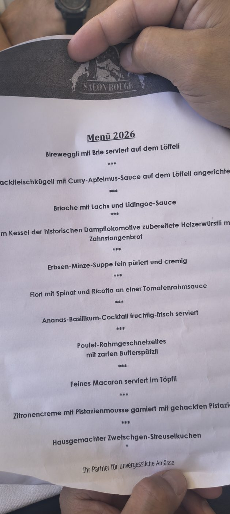
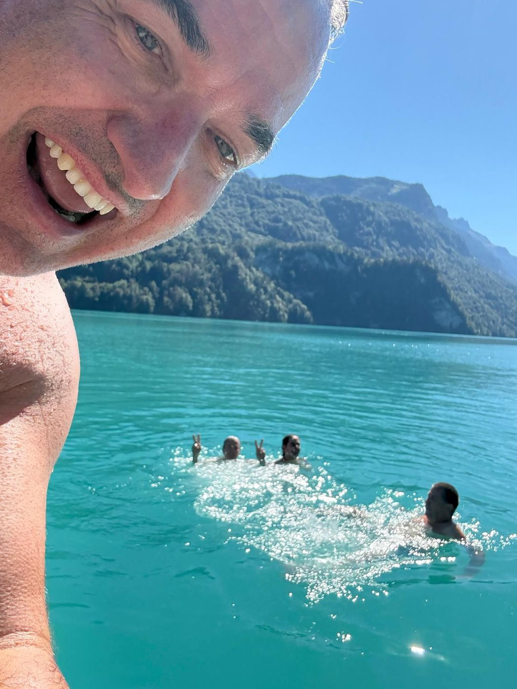
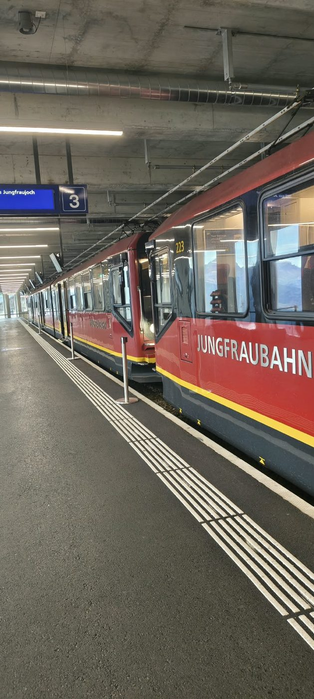
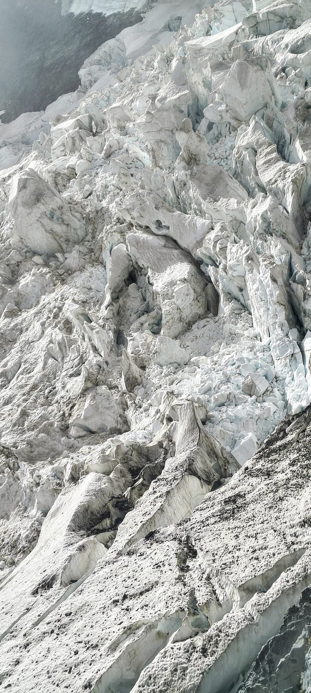
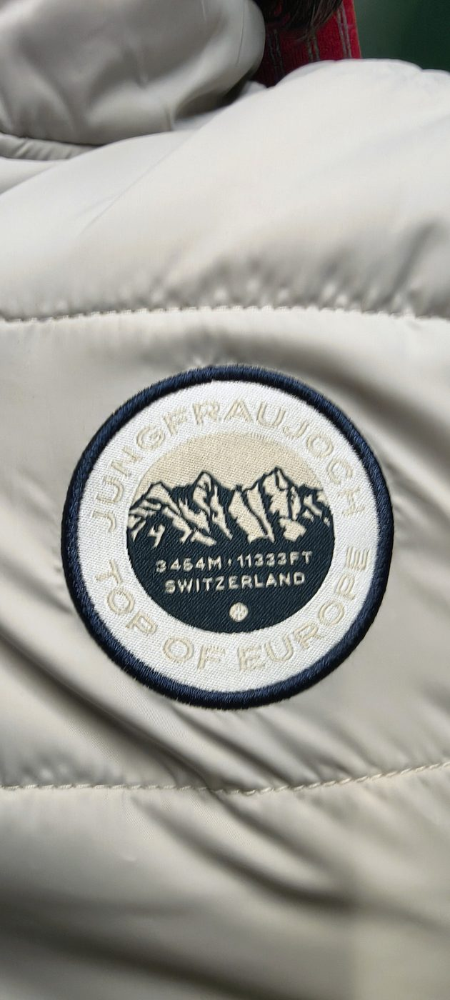
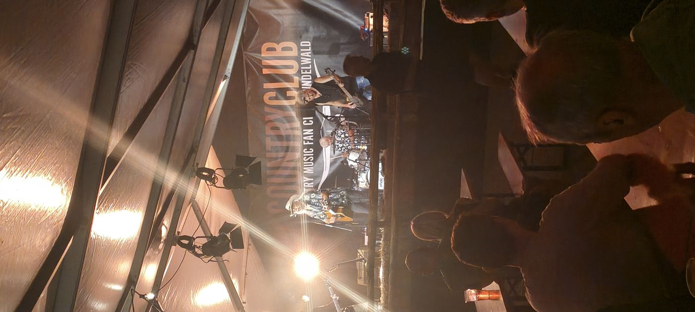
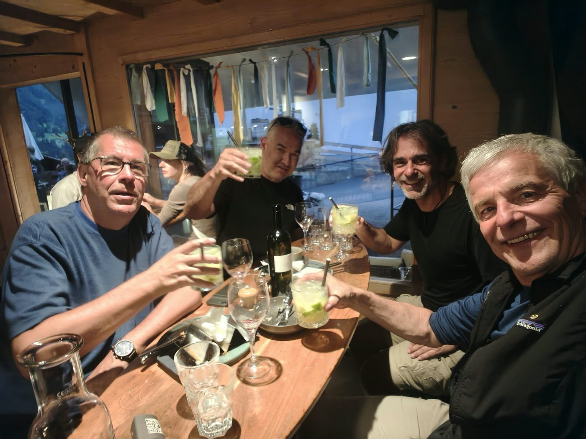

Drei Tage, vier Freunde, null Jasspartien — dafür ein Wochenende, das mehr geliefert hat als der Name je versprach: eine Dampflok-Gourmetfahrt mit 11 Gängen, ein spontaner Bootsausflug im türkisen Brienzersee, das Dach Europas mitten im Nebel, ein zufälliger Jungfrau-Marathon-Zieleinlauf, eine Country Night mitten im Dorf und ein Flug mit dem First Glider zum Abschluss. Hier der ganze Verlauf, so wie er wirklich war — inklusive der kleinen Pannen und Umwege. 👇

Foto: Wikimedia Commons, CC BY-SA
06:08Ab Neerach, Post — Bus B515 Richtung Bülach Bahnhof
06:08–09:53Zugreise via Bülach nach Brienz (3h45, 1. Klasse — Tickets bereits von Reto gekauft) 🎟️
09:53Ankunft Brienz — Bahnhof BRB liegt direkt gegenüber
10:15Treffpunkt Rampe Depot BRB, Begrüssung & Einblick Werkstatt Highlight
10:45Abfahrt mit historischer Dampflok & Salon Rouge — 11-Gänge-Erlebnis beginnt! 🥂
📜 Menü 2026 — Salon Rouge
Serviert in liebevollen Portionen quer durch die Dampflok-Fahrt, jeder Gang ein kleines Erlebnis für sich:
🥄 Bireweggli mit Brie, serviert auf dem Löffeli
🥄 Hackfleischkügeli mit Curry-Apfelmus-Sauce, auf dem Löffeli angerichtet
🍞 Brioche mit Lachs und Lidingoe-Sauce
🌭 Im Kessel der historischen Dampflok zubereitete Heizerwürstli mit Zahnstangenbrot
🍲 Erbsen-Minze-Suppe, fein püriert und cremig
🍝 Fiori mit Spinat und Ricotta an einer Tomatenrahmsauce
🍹 Ananas-Basilikum-Cocktail, fruchtig-frisch
🍗 Poulet-Rahmgeschnetzeltes mit zarten Butterspätzli
🍬 Feines Macaron, serviert im Töpfli
🍋 Zitronencreme mit Pistazienmousse, garniert mit gehackten Pistazien
🥧 Hausgemachter Zwetschgen-Streuselkuchen

Die Original-Menükarte vom Wagen
12:15Ankunft Rothorn Kulm (2244 m ü. M.) — Aussicht auf 693 Gipfel
12:45Rückfahrt ab Kulm, weiter geniessen
Oben in den Wolken — 693 Gipfel im Blick ☁️
Der Zugbegleiter auf Portugiesisch — plötzlich mehrsprachig unterwegs 🇵🇹
14:35Ankunft zurück in Brienz — Bäuche voll, Herzen glücklich
ca. 15:00–17:00🚤 Spontane Bootsmiete "Jolly Roger" ab Brienz — 2 Std. Pontonboot, Schwimmen im türkisen See Highlight

Mitten im türkisblauen Brienzersee schwimmend unterm Bug der "Jolly Roger" — spontaner als geplant, aber genau deshalb einer der schönsten Momente des Tages. 🏊
So sieht Ferien-Modus aus 😎
"Achtung!" — kurz bevor's spritzig wurde 🌊😄
17:40⛴️ Kursschiff ab Brienz Richtung Interlaken Ost (ca. 1h15, CHF 39)
ca. 18:55Ankunft Interlaken Ost — Einkauf fürs Frühstück bei Coop (direkt am Bahnhof, freitags bis 21:00 offen) 🛒
ca. 19:20Zug Interlaken Ost–Burglauenen (ca. 35–40 Min.)
ca. 20:00Ankunft Unterkunft — Einkauf deponieren, kurz frisch machen
ca. 20:15🍽️ Nachtessen im Hotel-Restaurant direkt beim Bahnhof Grindelwald
AbendTrotz "Jassreise" im Namen: noch immer kein einziges Mal gejasst 🃏😂 — dafür viel gelacht
🍽️ Nachtessen in Grindelwald — ehrliches Fazit
Fondue war leider nicht so überzeugend, der Salat okay, und die Bedienung liess ziemlich zu wünschen übrig.
Trotzdem: gute Laune, viele Lacher — am Ende zählt sowieso mehr die Gesellschaft als der Teller. 😄
🎟️ Tickets Salon Rouge (Auftrag 146847):
Robert Görtz
Roger Strebel
Reto Zimmermann
Pius Meier
Je CHF 275.– — teurer als jedes Jass-Blatt, aber garantiert ohne Bock und Stöck 😄
🔑 Check-in Brüggstock — Infos von Gastgeber Dany
Ab 15:00 Uhr bereit. Schlüssel liegt im Schlüsselsafe direkt neben der Tür,
Code: 3800. Gratis-Parkplätze direkt am Haus.
🚂 Bei Zug-Anreise: in den hintersten Wagen einsteigen und der Ansage im Zug
folgen (Burglauenen ist ein kurzer Halt).
.jpg?width=1000)
Foto: Wikimedia Commons, CC BY-SA 4.0
07:57Abfahrt Burglauenen — Ticket bestätigt Reto
ca. 08:15Weiter via Grindelwald Terminal, Eiger Express hoch nach Eigergletscher 🚡
ca. 08:40Umsteigen Jungfraubahn Richtung Jungfraujoch

Die rote Jungfraubahn wartet im Tunnelbahnhof — von hier geht's nur noch nach oben, hinein ins Herz des Berges. 🚞
ca. 09:15Ankunft Jungfraujoch (3454 m) — Sphinx, Eispalast, Gänsehaut Highlight
VormittagZeit oben geniessen, Mittagessen 🍽️
Der Gang durch den Eispalast — Jahrtausende altes Gletschereis 🧊
Alle vier mitten im Eis — 3454 m über Meer ❄️
13:15Rückfahrt ab Jungfraujoch — Ticket bestätigt Reto

Der Eigergletscher aus nächster Nähe — zerklüftetes Eis, tiefe Spalten, eine Urgewalt zum Anfassen nah. ❄️

Gemeinsamer Einkauf am Jungfraujoch: "Top of Europe"-Weste für alle vier Jasser — 3454 m Erinnerung zum Anziehen. 🧥🏔️
ca. 13:35Ankunft Kleine Scheidegg — Jungfrau-Marathon-Zielstimmung am Eigergletscher 🏃
ca. 13:40–15:40🥾 Panoramaweg Kleine Scheidegg → Männlichen (ca. 4,5 km, 2 Std.) — Eiger, Mönch und Jungfrau immer im Blick
Spontaner Stopp am Wasserfall — kalt, laut, wunderschön 💦
ca. 15:40🍽️ Essen im Berghaus Männlichen auf der Panoramaterrasse
danachGondel Männlichen–Grindelwald (ca. 20 Min.), weiter nach Burglauenen
Abend🤠 Country Night 2026 auf dem Eiger+ Nordwandplatz mitten in Grindelwald — Live on Stage: Bad Cat Kusi, Eric St. Michaels, Hot Rod Cowboys, Rosewood, Eric & Rock Avengers. Country Bar mit Essen und Drinks. Highlight

Zufällig genau am richtigen Abend in Grindelwald: Country Night mitten im Dorf, fünf Live-Bands, Cowboyhüte und beste Stimmung unter der Eiger-Nordwand. 🎸🤠
Line Dance vor der Eiger-Nordwand — wer hätte das gedacht 🤠💃
🤠 Spontan-Highlight: Country Night Grindelwald
Genau am richtigen Tag reingestolpert: Der Country Music Fan Club Grindelwald veranstaltet einmal im Jahr seine legendäre
Country Night auf dem Eiger+ Nordwandplatz — fünf Bands, Country Bar, einzigartige Stimmung mitten im Dorf unter der Eiger-Nordwand.
Der perfekte Abschluss eines langen Bergtages. 🎸
🍹 Nachtessen: Danach nochmal auswärts, schon 4 Caipirinhas intus — bestes Essen im ganzen Berner Oberland, Top-Crew, Top-Stimmung.
❄️ Wichtig: Sitzplatzreservation für die Jungfraubahn ist von Mai–Oktober 2026 Pflicht — Reto kümmert sich darum. Warme Jacke einpacken, auch im September kann's oben frisch sein!
08:45Check-out Brüggstock — Schlüssel zurück in den Safe (Code 3800), Gepäck mitnehmen
09:00Zug Burglauenen–Grindelwald (ca. 10 Min.) — Gepäck in die Schliessfächer am Bahnhof
ca. 09:30Gondel Grindelwald–First (ca. 30 Min.)
ca. 10:00🚡 First (2168 m) — First Cliff Walk, im Gondelticket inklusive. Panorama auf Eiger, Wetterhorn und Schreckhorn
ab 11:00🦅 Geflogen! First Glider zu viert — wie ein Adler durchs Bergpanorama, bis 83 km/h Highlight
danach🛴 Mit dem Trottibike runter ins Tal statt Gondel — Fahrspass pur
Abflug! Der First Glider nimmt Fahrt auf 🦅
Volle Fahrt durchs Bergpanorama 💨
ca. 13:00🍽️ Mittagessen im Restaurant Basecamp, Grindelwald — bester Service, super Essen, Traumaussicht auf die Berge Highlight

Anstossen im Restaurant Basecamp — der perfekte Ausklang vor der Heimreise, mit Blick auf die Berge und einem letzten Drink zu viert. 🥂
14:47Rückfahrt ab Grindelwald via Interlaken–Spiez–Bern–Zürich, weiter nach Bülach/Neerach
💰 Preise (ohne Gondel): First Flyer ca. CHF 31/Fahrt · Adventure-Package CHF 69 (1 Aktivität) bis CHF 99 (alle 4: Flyer, Glider, Mountain Cart, Trottibike). Mit Halbtax günstiger.
💡 Tipp: Genaue Abfahrtszeiten kurz vorher im SBB-Fahrplan (sbb.ch) checken, da Anschlüsse variieren können.